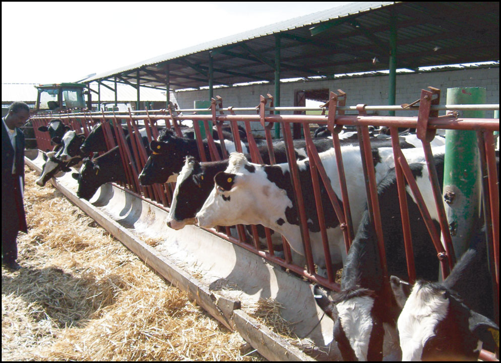
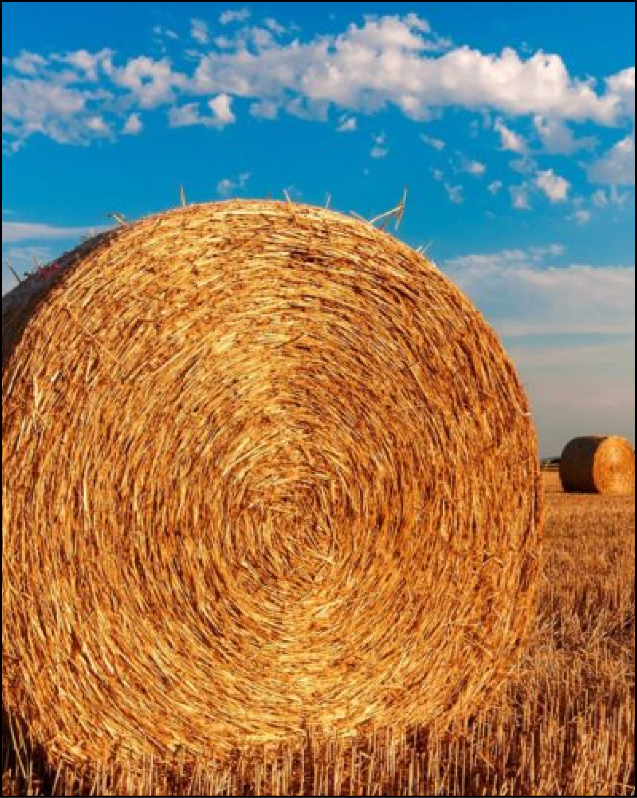
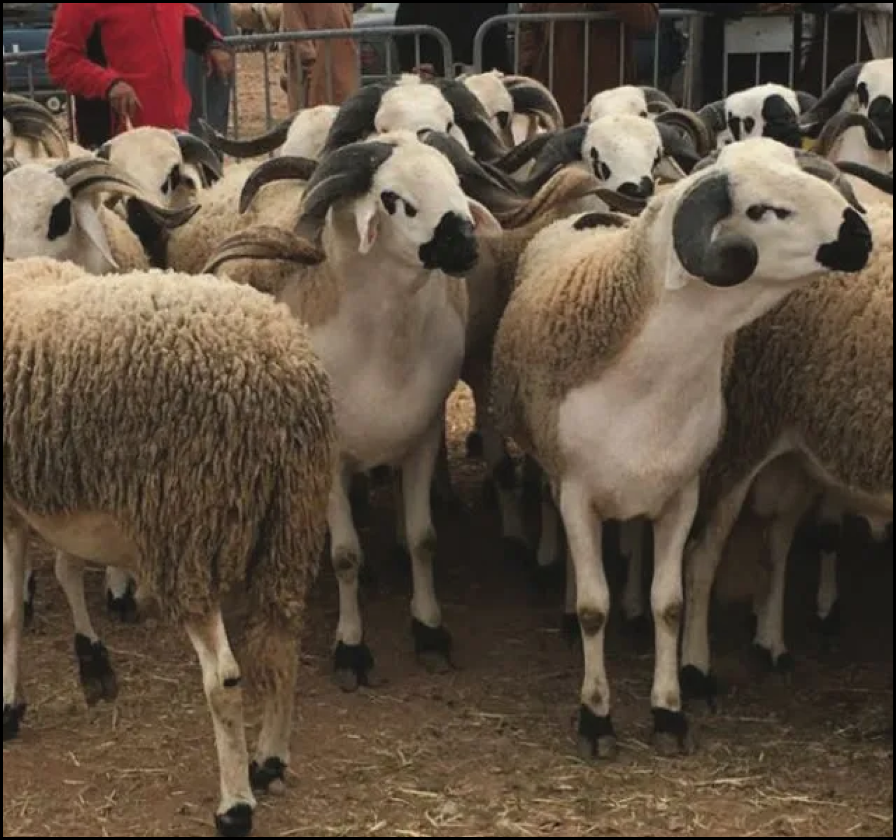
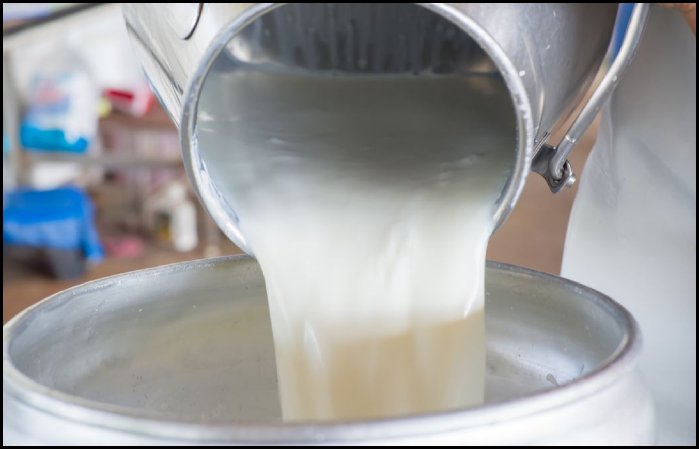
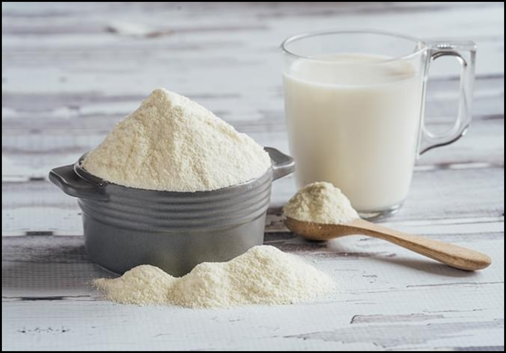

République Tunisienne
Ministère de l’Agricultutre, des Ressources Hydrauliques et de la Pêche
Ministère de l’Agricultutre, des Ressources Hydrauliques et de la Pêche
Le GIVLait assure le suivi d’une façon régulière des marchés aux bestiaux (marché de Tunis, du cap bon et du fahs afin de faire une collecte des informations sur les prix du bétail vifs (principalement bovins et ovins).
Ce programme vise à assurer l’approvisionnement des éleveurs du Centre et du Sud du pays en fourrage par le biais des structures interprofessionnelles et éleveurs accordés par la commission régionale. Pour se faire le groupement se charge de contribuer au coût de transport des fourrages ne dépassent pas 7 millimes/balle/Km pour le foin et la paille et 100 millimes/tonne/Km pour les sous produits.
Le GIVLait intervient par l’organisation de la vente des agneaux durant la période de l’aïd par l’approvisionnement des deux points de vente (Saîda, Radès) par un nombre d’agneaux destiné à être vendu pour le consommateur selon des prix bien défini.
Ce programme se caractérise par la valorisation de haute lactation et la tendance vers l’autosuffisance dans le lait de boisson.
Le séchage du lait consiste à une valorisation des excédents et à une tendance vers l’autosuffisance totale.
L’exportation du lait se fait dans le cadre de la mondialisation et l’ouverture des frontières surtout avec les pays voisins. A coté de ces mécanismes de régulation de la filière, on cite les programmes propres au GIVLAIT :